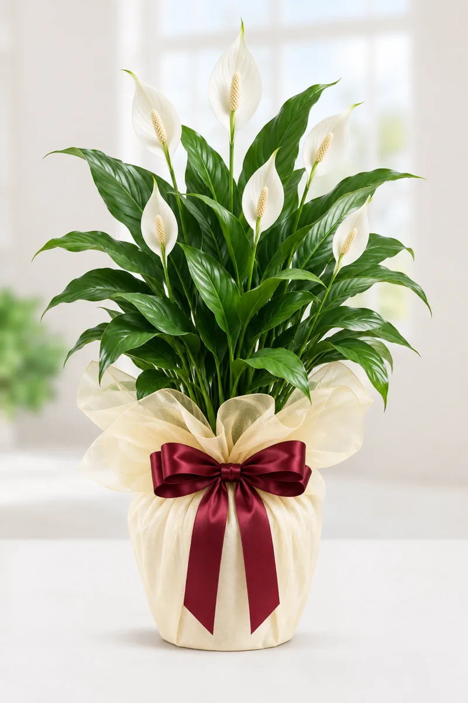
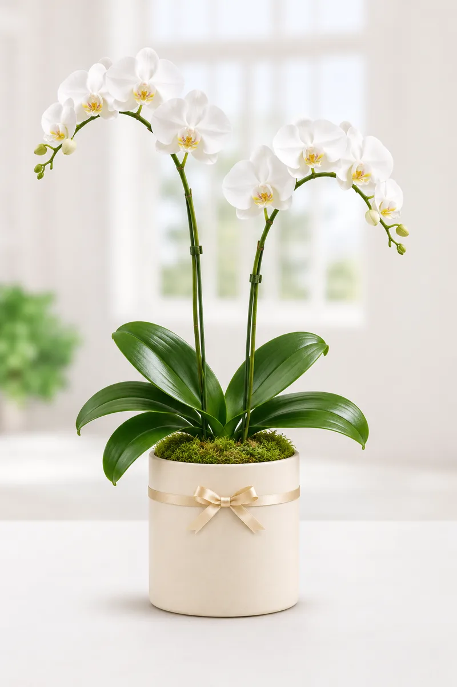
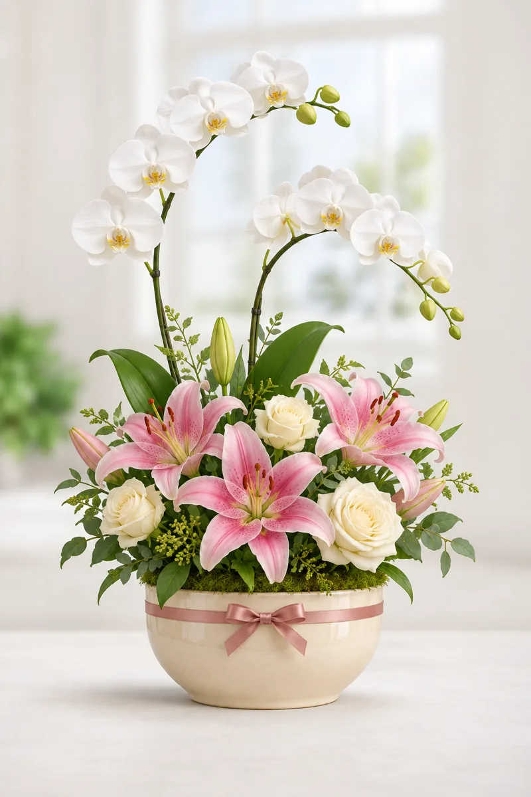
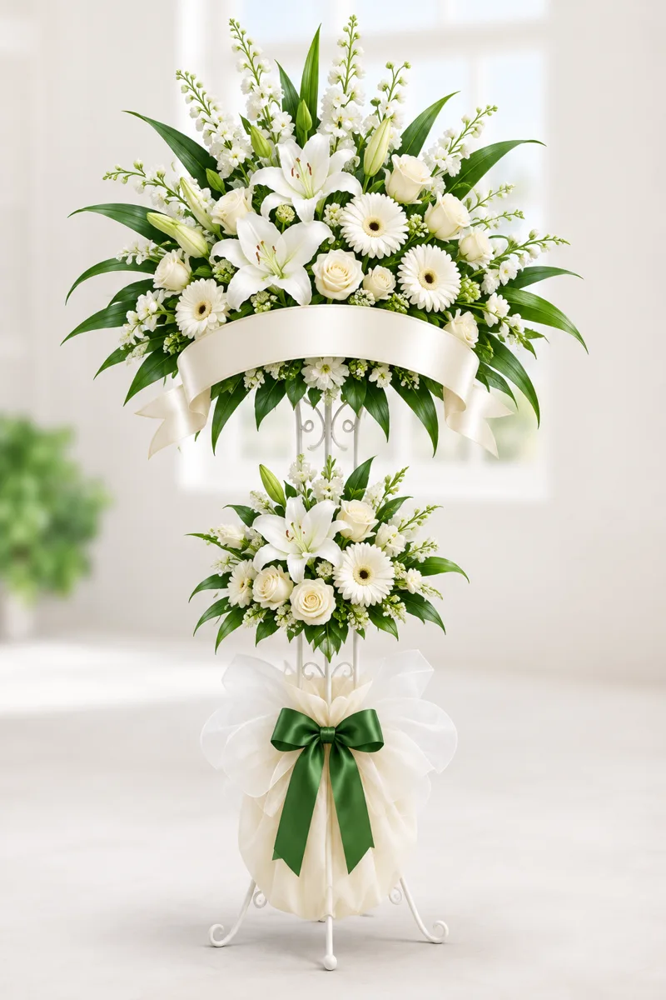
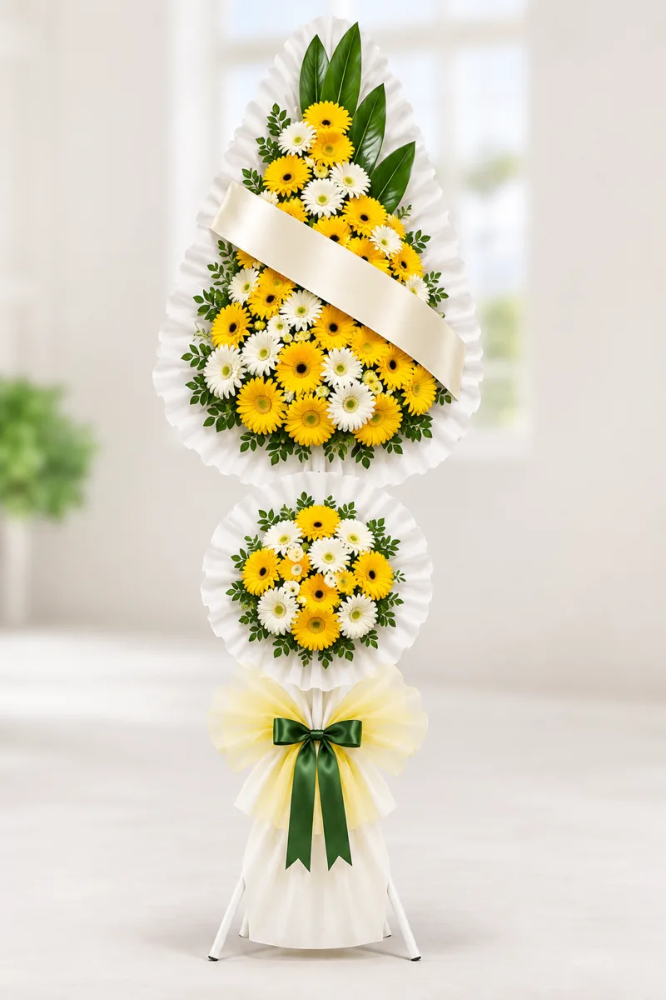

Benjamin
Stant girişine ve karşılama alanına yeşil bir dokunuş.
₺1.750 + %20 KDV
Bu ürünle sipariş oluştur21–24 KASIM 2026 · TÜYAP İSTANBUL
Avrasya Pencere, Kapı ve Cam Fuarları için standınızı yeşillendirin, iş ortaklarınıza iyi fuarlar dileyin. Orkide, saksı bitkisi ve kutlama çelenklerini TÜYAP’taki salon ve standınıza göre birlikte planlayalım.
7/24 sipariş iletişimi · Teslimat zamanı WhatsApp’tan teyit edilir.

KATALOGDAN FUARINIZA
Karşılama alanı için saksı bitkileri, kurumsal tebrikler için orkide ve açılış için gösterişli aranjmanlar. Fiyatlara belirtilen KDV oranı eklenir.
Stant girişine ve karşılama alanına yeşil bir dokunuş.
₺1.750 + %20 KDV
Bu ürünle sipariş oluştur
Görüşme ve karşılama köşeleri için zarif bir seçenek.
₺1.450 + %20 KDV
Bu ürünle sipariş oluştur
İş ortaklarınıza sade ve özenli bir iyi fuarlar hediyesi.
₺2.750 + %20 KDV
Bu ürünle sipariş oluştur
Kurumsal tebriklerinize eşlik eden çiçekli bir aranjman.
₺4.750 + %20 KDV
Bu ürünle sipariş oluştur
Stant önünde ve açılışta dikkat çeken bir karşılama.
₺9.500 + %20 KDV
Bu ürünle sipariş oluştur
Firmanızın tebrik mesajını fuar standına taşıyın.
₺4.250 + %20 KDV
Bu ürünle sipariş oluşturGüncel ürün seçeneklerini WhatsApp’tan birlikte belirleyelim.
TÜYAP’A ÖZEL SİPARİŞ
Avrasya Pencere ve Kapı Fuarı ile eş zamanlı Avrasya Cam Fuarı için sipariş ayrıntılarınızı paylaşın. Form, bilgilerinizi hazır bir WhatsApp mesajına dönüştürür.
Ürün uygunluğu, fuar giriş koşulları ve teslimat saati sipariş sırasında teyit edilir. Formu doldurmak tek başına kesin sipariş oluşturmaz.
Ürün seçiminde birlikte karar verelim.
+90 547 567 0406